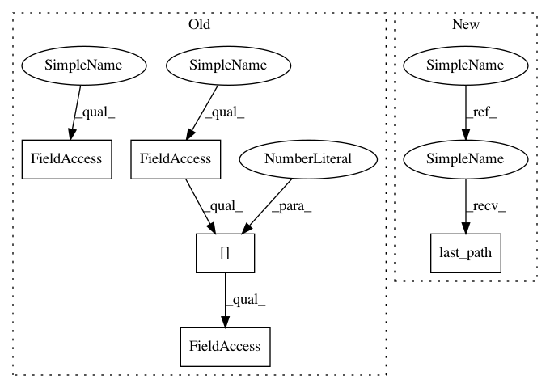

554dfdbc78a6fef06542a907c0073911b8dfc654,Orange/widgets/data/owfile.py,OWFile,browse_file,#OWFile#Any#,326
Before Change
"Cannot find the directory with documentation data sets")
return
else:
if self.recent_paths:
start_file = self.recent_paths[0].abspath
else:
start_file = os.path.expanduser("~/")
filename = QtGui.QFileDialog.getOpenFileName(
After Change
self.source = self.URL
self.load_data()
def browse_file(self, in_demos=False):
if in_demos:
start_file = get_sample_datasets_dir()
if not os.path.exists(start_file):
QtGui.QMessageBox.information(
None, "File",
"Cannot find the directory with documentation data sets")
return
else:
start_file = self.last_path() or os.path.expanduser("~/")
filename = QtGui.QFileDialog.getOpenFileName(
self, "Open Orange Data File", start_file, self.dlg_formats)
In pattern: SUPERPATTERN
Frequency: 3
Non-data size: 5
Instances
Project Name: biolab/orange3
Commit Name: 554dfdbc78a6fef06542a907c0073911b8dfc654
Time: 2016-02-26
Author: janez.demsar@fri.uni-lj.si
File Name: Orange/widgets/data/owfile.py
Class Name: OWFile
Method Name: browse_file
Project Name: biolab/orange3
Commit Name: 0bd480bc54782abad492e56144d6f580e93a9c6a
Time: 2016-02-26
Author: janez.demsar@fri.uni-lj.si
File Name: Orange/widgets/unsupervised/owdistancefile.py
Class Name: OWDistanceFile
Method Name: browse_file
Project Name: biolab/orange3
Commit Name: 0bd480bc54782abad492e56144d6f580e93a9c6a
Time: 2016-02-26
Author: janez.demsar@fri.uni-lj.si
File Name: Orange/widgets/unsupervised/owdistancefile.py
Class Name: OWDistanceFile
Method Name: open_file